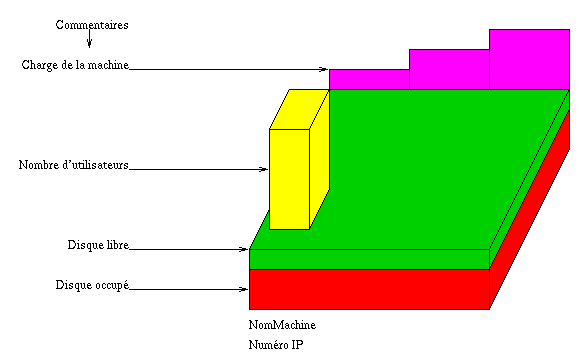

Objet Ordinateur
On s'intéresse à la visualisation d'un ordinateur.
Les données associée à l'ordinateur seront :
- Le nom de la machine.
- Sa position dans R3
- La charge sur 1, 5 et 15 minutes (3 flottants)
- Le nombre d'utilisateurs (un entier)
- La taille du disque totale ainsi que la taille occupée (2 entier)
- L'adresse IP de la machine (une chaine de caractères)
- Une liste d'adresse IP de machine avec des connexions
en cours (une chaine de caracteres)
Pour simplifier l'affichage graphique de la machine,
on la tracera toujours dans le cube d'espace [0-1]x[0-1]x[0-1]
(cube dont les coin sont les point (0,0,0) et (1,1,1))
Ensuite on la positionnera à l'aide de transformation
de repère.
Si la représentation déborde en hauteur à cause
d'une valeur trop grande, ce n'est pas grave,
laissez la déborder.
On pourra prendre comme unité en hauteur :
- Giga octet disque : 0.3
- Un utilisateur : 0.05
- Charge de 1 : 0.1
Une représentation possible serait :

Le squelette (o_ordi.c)
contenant les fonctions à remplir
pour ce TP et les suivants.
Pour ce premier TP, vous ne modifiez que la fonction d'affichage.
Pour l'affichage, deux solutions sont possibles :
- Dessiner des facettes simples sans prendre en compte
les sources lumineuses.
Dans ce cas IL FAUT TRACER LES BORDS des facettes.
- Utiliser glEnable(GL_LIGHTING)
pour prendre en compte les lampes.
Dans ce cas, il faudra inclure une lampe dans
la scène contenant les ordinateurs et
l'appliquer sur ceux-ci.
Lors de la création de l'ordinateur, n'oubliez
pas d'indiquer le nom de la machine à espionner
dans la fenêtre message AVANT de créer le noeud ordinateur.
N'oubliez pas de tracer différemment un ordinateur ``actif''
(c'est-à-dire que vous l'avez désigné et qu'il apparaît
jaune dans la fenêtre graphe)
d'un inactif.
Vous différentiez les deux grace à la valeur de o->actif.
Thierry EXCOFFIER
Last modified: Fri Dec 5 10:33:13 MET 1997